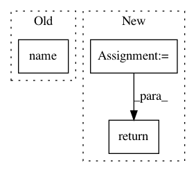

530a826bd84306097d7d63ac6c0616a9493234aa,tests/python/pants_test/engine/examples/planners.py,,setup_json_scheduler,#Any#Any#,425
Before Change
// TODO: to allow for running resolve alone, should split out a distinct "IvyReport" product.
"resolve": Classpath,
"list": BuildFileAddresses,
GenGoal.name(): GenGoal,
"ls": Snapshot,
"cat": FilesContent,
}
After Change
create_fs_rules()
)
scheduler = Scheduler(native,
project_tree,
work_dir,
rules,
native)
return scheduler.new_session()
In pattern: SUPERPATTERN
Frequency: 3
Non-data size: 3
Instances
Project Name: pantsbuild/pants
Commit Name: 530a826bd84306097d7d63ac6c0616a9493234aa
Time: 2018-05-13
Author: stuhood@twitter.com
File Name: tests/python/pants_test/engine/examples/planners.py
Class Name:
Method Name: setup_json_scheduler
Project Name: stellargraph/stellargraph
Commit Name: f86781c68cac46a283555471b3d7ca32ca16ccdf
Time: 2020-05-11
Author: Huon.Wilson@data61.csiro.au
File Name: stellargraph/core/convert.py
Class Name: ColumnarConverter
Method Name: _convert_single
Project Name: analysiscenter/batchflow
Commit Name: ffb26630d54f6c951cac7fb861ba8ba2ad812a26
Time: 2019-07-29
Author: rhudor@gmail.com
File Name: batchflow/named_expr.py
Class Name: F
Method Name: get